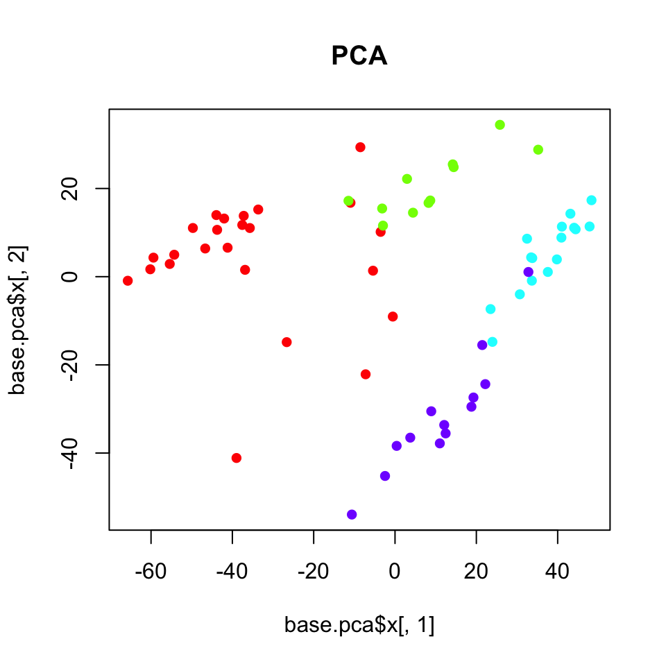
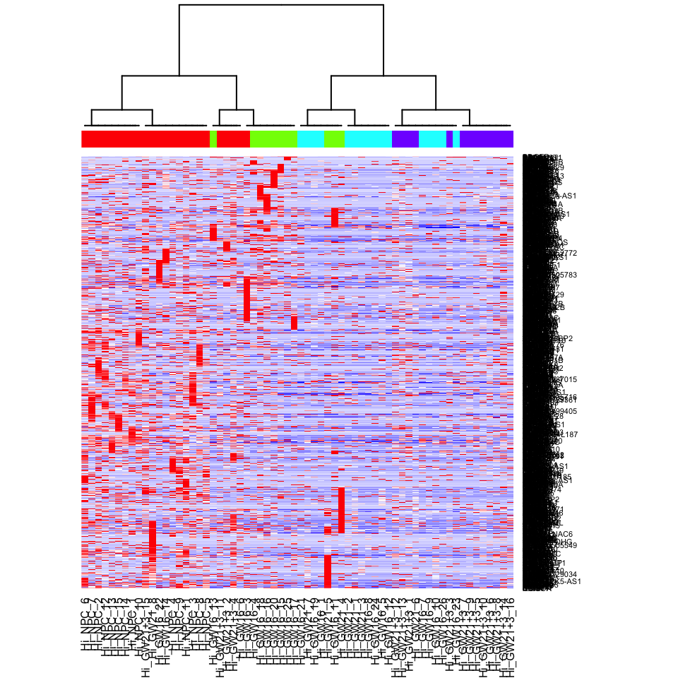

Scw2015
Single Cell Workshop 2015
Single Cell Workshop 2015
Materials for the Analysis of heterogeneity and subpopulations session of the HSCI/Catalyst single cell RNA-Seq workshop, Nov 2015
Analysis of heterogeneity and subpopulations
In the last session of the workshop, we learned about the techniques that we can use to identify differentially expressed genes when we have two subpopulations of interest. Now, in this session, we will become familiar with a few computational techniques we can use to discover and characterize subpopulations using single cell RNA-seq data.
Getting started
Be sure to have the appropriate modules loaded prior to starting analyses.
module load dev/python/2.7.6
module load stats/R/3.2.1
A single cell dataset from Pollen et al. has been pre-prepared for you. The data is provided as a matrix of gene counts, where each column corresponds to a cell and each row a gene.
# load and clean data
load('data_clean.RData')
cd[1:5, 1:5]## Hi_NPC_1 Hi_NPC_10 Hi_NPC_14 Hi_NPC_15 Hi_NPC_13
## A1BG 0 0 29 0 174
## A2M 0 0 11 0 63
## A2MP1 0 0 0 0 0
## AAAS 0 0 106 182 7
## AACS 0 0 0 116 0
# filter out low-gene cells (often empty wells)
cd <- cd[, colSums(cd>0)>1.8e3]
# remove genes that don't have many reads
cd <- cd[rowSums(cd)>10, ]
# remove genes that are not seen in a sufficient number of cells
cd <- cd[rowSums(cd>0)>5, ]
# transform to make more data normal
mat <- log10(as.matrix(cd)+1)
# look at snippet of data
mat[1:5, 1:5]## Hi_NPC_1 Hi_NPC_10 Hi_NPC_14 Hi_NPC_15 Hi_NPC_13
## A1BG 0 0 1.477121 0.000000 2.243038
## A2M 0 0 1.079181 0.000000 1.806180
## A2MP1 0 0 0.000000 0.000000 0.000000
## AAAS 0 0 2.029384 2.262451 0.903090
## AACS 0 0 0.000000 2.068186 0.000000
For this dataset, the subpopulations group labels have also been provided to you as a reference so we can see how different methods perform in recapitulating these labels.
head(sg, 5)## Hi_NPC_1 Hi_NPC_10 Hi_NPC_14 Hi_NPC_15 Hi_NPC_13
## group1 group1 group1 group1 group1
## Levels: group1 group2 group3 group4
PCA
Note that there are over 10,000 genes that can be used to cluster cells into subpopulations. One fast, easy, and common technique to identify subpopulations is by using dimensionality reduction to summarize the data into 2 dimensions and then visually identify obvious clusters. Principal component analysis is a linear dimensionality reduction method.
dim(mat)## [1] 11310 64
# use principal component analysis for dimensionality reduction
base.pca <- prcomp(t(mat))
# visualize in 2D the first two principal components and color by cell type
sgCol <- rainbow(length(levels(sg)))[sg]
plot(base.pca$x[,1], base.pca$x[,2], col=sgCol, pch=16, main='PCA')
Note that principal component analysis generally separates our subpopulations based on their expected group labels. However, cells do not segregate into obvious clusters. Furthermore, one of the main driving axis of variation here appears to be library size.
# scale to 1 to 100 range
libSize <- colSums(cd > 0) # number of genes detected per cell as proxy
libSize <- libSize - min(libSize) + 1
libSize <- libSize / max(libSize)
libSize <- round(libSize*100)
# make red correspond to cells with more genes detected and blue to cells with less
libCol <- colorRampPalette(c('blue', 'yellow', 'red'))(100)[libSize]
plot(base.pca$x[,1], base.pca$x[,2], col=libCol, pch=16, main='PCA')
tSNE
tSNE is a non-linear dimensionality reduction method. With tSNE, one group of cells do seem to segregate cleanly from the rest. If we did not have knowledge of the true group labels, we would be inclined to call this outgroup a subpopulation.
require(Rtsne)
d <- stats::dist(t(mat))
set.seed(0) # tsne has some stochastic steps (gradient descent) so need to set random
tsne_out <- Rtsne(d, is_distance=TRUE, perplexity=10, verbose = FALSE)
plot(tsne_out$Y, col=sgCol, pch=16, main='tSNE')
Still, we may be wondering what genes are driving this subpopulation? What genes or pathways characterize this subpopulation? For that, additional analysis is often needed and dimensionality reduction alone does not provide us with such insight.
Hierarchical clustering
Standard hierarchical clustering uses genes to identify distinct classes of cells. In combination with a heatmap visualization, genes driving the hierarchical clustering can become readily apparent. However, most genes are not informative and contribute, at best, noise, resulting in an inaccurate clustering of cells.
# for the sake of speed, just select top 100 most variable genes
v <- apply(mat, 1, var)
vi <- names(sort(v)[1:100])
hc <- hclust(dist(t(mat[vi,])))
# visualize as heatmap
heatmap(mat[vi,], Rowv=NA, Colv=as.dendrogram(hc), ColSideColors = sgCol, col=colorRampPalette(c('blue', 'white', 'red'))(100))
BackSPIN
Biclustering can be used to overcome this problem by simultaneously clustering genes and cells. BackSPIN is an iterative, biclustering method based on sorting points into neighborhoods that can be used to cluster genes and cells to identify subpopulations as well as potential markers for each subpopulations. BackSPIN requires a particular CEF file as the input, so first, we will write out our data into that format.
write(file="cd.cef", paste("CEF\t0\t1\t1", nrow(cd), ncol(cd), "0", sep="\t"))
write(file="cd.cef", paste('\t', c("cell"), paste(colnames(cd), collapse="\t"), sep='\t'), append=T)
x <- cbind(rep("",nrow(cd)), cd)
write(file="cd.cef", paste(c("gene"), sep="\t"), append=T)
write.table(file="cd.cef", x, append=T, col.names=F, row.names=T, quote=F, sep="\t")Now we can run BackSPIN by calling Python from within R.
system("./BackSPIN-1.0/backSPIN.py -i cd.cef -o cd.clustered.cef -f 2000 -v -d 3")Now we can read the results back into R and visualize. We can note how BackSPIN first splits the red and green groups of cells from the blue and purple cells, and then proceeds to iteratively split within each of the identified groups.
bsp.head <- read.delim("cd.clustered.cef", sep="\t", stringsAsFactors=F, nrows=5, skip=1, header=F)
bsp.lab <- bsp.head[-c(1,2),-c(1:6)]
colnames(bsp.lab) <- bsp.head[1,-c(1:6)]
bsp.lab <- data.matrix(bsp.lab)
# color columns by group labels
hc <- hclust(dist(t(bsp.lab)))
heatmap(bsp.lab, Rowv=NA, Colv=as.dendrogram(hc), ColSideColors = sgCol)
We can also assess what genes are driving these subpopulations.
bsp.genes <- read.delim("cd.clustered.cef",stringsAsFactors=F,sep="\t",skip=7,header=T)
bsp.sets <- unlist(apply(bsp.genes[,c(3,4,5)],2,function(x) tapply(bsp.genes[,1],as.factor(x),I)),recursive=F)
# Look at one set
genes <- bsp.sets[[1]]
# alternatively, uncomment to choose another gene set
#genes <- bsp.sets[[2]]
# scale for better visualization
m <- mat[genes,]
m <- t(scale(t(m)))
m[m < -2] <- -2
m[m > 2] <- 2
heatmap(m, Rowv=NA, Colv=as.dendrogram(hc), col=colorRampPalette(c('blue', 'white', 'red'))(100), ColSideColors = sgCol, scale='none')
Interestingly, we can see how the green group of cells were separated into different subpopulations in the first split, although closer inspection of genes may suggest additional aspects of transcriptional heterogeneity that cut across this initial split.
PAGODA
PAGODA is a method developed by the Kharchenko lab that enables identification and characterization of subpopulations in a manner that potentially resolves multiple overlapping aspects of transcriptional heterogeneity.
PAGODA routines are implemented within the SCDE R package.
# DO NOT EVALUATE
# This package has already been installed for you
require(devtools)
devtools::install_github('hms-dbmi/scde', build_vignettes = FALSE)Error models are first fitted for each single cell. The purpose of the fitting is to model each cell as a mixture of two probabilistic processes—one in which the transcript is amplified and detected at a level correlating with its abundance and the other in which a transcript fails to amplify or is not detected for other reasons (ie. dropout). In this manner, we can more robustly identify and distinguish drop-out events from true lack of expression. Additional details of the error modeling can be found in the original SCDE manuscript.
The fitting process relies on a subset of robust genes that are detected in multiple cross-cell comparisons. Due to the number of cross-cell comparisons, this step is fairly computationally intensive. For the purpose of example, we will compute error models for a small subset of 10 cells.
library(scde)
knn <- knn.error.models(cd[, 1:10], k = ncol(cd)/5, n.cores = 4, min.count.threshold = 2, min.nonfailed = 5, max.model.plots = 5, save.model.plots = TRUE, verbose = 1) # turn on verbosity## cell : calculating cell-cell similarities ... done
head(knn)## conc.b conc.a fail.r corr.b corr.a corr.theta
## Hi_NPC_1 47.64973 -16.42042 -2.302585 0.9101083 1 0.1528216
## Hi_NPC_10 48.87006 -17.58194 -2.302585 0.9772399 1 0.1775833
## Hi_NPC_14 52.52041 -18.48200 -2.302585 0.5483105 1 0.1815323
## Hi_NPC_15 51.54416 -18.33884 -2.302585 1.0375941 1 0.1823398
## Hi_NPC_13 52.11990 -18.40302 -2.302585 0.9479813 1 0.1749775
## Hi_NPC_12 72.02597 -25.34845 -2.302585 0.4635859 1 0.2412035
## corr.ltheta.b corr.ltheta.t corr.ltheta.m corr.ltheta.s
## Hi_NPC_1 -8.305691 2.914855 4.075386 -0.5057704
## Hi_NPC_10 -3.160282 3.288652 4.286077 -0.4124728
## Hi_NPC_14 -5.555386 3.250469 3.072089 -0.6740517
## Hi_NPC_15 -1.809298 2.844078 6.034755 -0.3642427
## Hi_NPC_13 -3.234334 2.591892 3.786538 -1.0339466
## Hi_NPC_12 -1.507832 3.344728 4.478469 -0.5397455
## corr.ltheta.r conc.a2
## Hi_NPC_1 0.1170947 1.468411
## Hi_NPC_10 0.4049705 1.630775
## Hi_NPC_14 0.1000000 1.685696
## Hi_NPC_15 1.4353150 1.681808
## Hi_NPC_13 0.1000000 1.674445
## Hi_NPC_12 0.7648221 2.291489
In the resulting summary table, corr.a and corr.b are slope and intersept of the correlated component fit, conc.a and conc.b are to the concomitant or associated fits, corr.theta is the NB over-dispersion, and fail.r is the background Poisson rate (fixed). We can also take a look at the resulting cell.model.fits.pdf file that is outputted to get a sense of how these parameters related to the data.

The full set of error models for all cells has been precomputed for you and can be loaded.
load('knn.RData')Particularly poor cells may result in abnormal fits, most commonly showing negtive corr.a, and should be removed.
# filter out cells that don't show positive correlation with
# the expected expression magnitudes (very poor fits)
valid.cells <- knn$corr.a > 0
table(valid.cells)## valid.cells
## TRUE
## 64
knn <- knn[valid.cells, ]PAGODA relies on accurate quantification of excess variance or overdispersion in genes and gene sets in order to cluster cells and identify subpopulations. Accurate quantiification of this overdispersion means that we must normalize out expected levels of technical and intrinsic biological noise. Intuitively, lowly-expressed genes are often more prone to drop-out and thus may exhibit large variances simply due to such technical noise.
In PAGODA, variance of the NB/Poisson mixture processes derived from the error modeling step are modeled as a chi-squared distribution using adjusted degrees of freedom and observation weights based on the drop-out probability of a given gene. Additional details can be found in the PAGODA manuscript.
varinfo <- pagoda.varnorm(knn, counts = cd, trim = 3/ncol(cd), max.adj.var = 5, n.cores = 4, plot = TRUE)
Sequencing depth or gene coverage is typically still a major aspects of variability, as we have seen previously in our PCA analysis. We can control for the gene coverage (estimated as a number of genes with non-zero magnitude per cell) and normalize out that aspect of cell heterogeneity.
varinfo <- pagoda.subtract.aspect(varinfo, colSums(cd[, rownames(knn)]>0))We assess for overdispersion in gene sets, we can take advantage of pre-defined pathway gene sets such as GO annotations and look for pathways that exhibit statistically significant excess of coordinated variability. Intuitively, if a pathway is differentially perturbed, we expect all genes within said pathway to be upregulated or downregulated in the same group of cells. In PAGODA, for each gene set, we tested whether the amount of variance explained by the first principal component significantly exceed the background expectation.
A set of GO terms has been pre-defined for you and can be loaded.
# DO NOT EVALUATE
# code is provided to show you how the GO terms were derived
library(org.Hs.eg.db)
# translate gene names to ids
ids <- unlist(lapply(mget(rownames(cd), org.Hs.egALIAS2EG, ifnotfound = NA), function(x) x[1]))
# reverse map
rids <- names(ids)
names(rids) <- ids
# list all the ids per GO category
go.env <- eapply(org.Hs.egGO2ALLEGS, function(x) as.character(na.omit(rids[x])))
# omit categories with too few genes
go.env <- go.env[unlist(lapply(go.env, length))>5]
# append descriptions to the GO names
library(GO.db)
desc <- unlist(lapply(mget(names(go.env), GOTERM, ifnotfound = NA), function(x) if(is.logical(x)) { return("") } else { slot(x, "Term")}))
names(go.env) <- paste(names(go.env), desc) # append description to the names
# convert to an environment
go.env <- list2env(go.env) load('go.env.RData')
# pathway overdispersion
pwpca <- pagoda.pathway.wPCA(varinfo, go.env, n.components = 1, n.cores = 4, n.internal.shuffles = 0)Instead of relying on pre-defined pathways, we can also test on 'de novo' gene sets whose expression profiles are well-correlated within the given dataset.
# de novo gene sets
clpca <- pagoda.gene.clusters(varinfo, trim = 7.1/ncol(varinfo$mat), n.clusters = 150, n.cores = 4, plot = FALSE)Testing these pre-defined pathways and annotated gene sets may take a few minutes. If you are having trouble keeping up, you can load a pre-computed version.
load('clusters.RData')Taking into consideration both pre-defined pathways and de-novo gene sets, we can see which aspects of heterogeneity are the most overdispersed and base our cell cluster only on the most overdispersed and informative pathways and gene sets.
# get full info on the top aspects
df <- pagoda.top.aspects(pwpca, clpca, z.score = 1.96, return.table = TRUE)
head(df)## name
## 5556 geneCluster.7
## 447 GO:0003170 heart valve development
## 448 GO:0003179 heart valve morphogenesis
## 452 GO:0003208 cardiac ventricle morphogenesis
## 2149 GO:0021952 central nervous system projection neuron axonogenesis
## 4507 GO:0060045 positive regulation of cardiac muscle cell proliferation
## npc n score z adj.z sh.z adj.sh.z
## 5556 1 278 3.954466 15.93746 15.621175 NA NA
## 447 1 14 2.987632 10.17247 9.850132 NA NA
## 448 1 14 2.987632 10.17247 9.850132 NA NA
## 452 1 27 2.798583 11.41449 11.091890 NA NA
## 2149 1 20 2.644643 9.67749 9.357735 NA NA
## 4507 1 11 2.635690 8.03415 7.701229 NA NA
tam <- pagoda.top.aspects(pwpca, clpca, z.score = qnorm(0.01/2, lower.tail = FALSE))
# determine overall cell clustering
hc <- pagoda.cluster.cells(tam, varinfo)Because many of our annotated pathways and de novo gene sets likely share many genes or exhibit similarpatterns of variability, we must reduce such redundancy. First, we will combine pathways that are driven by the same sets of genes.
# reduce redundant aspects
tamr <- pagoda.reduce.loading.redundancy(tam, pwpca, clpca)Next, we will combine aspects that show similar patterns (i.e. separate the same sets of cells). In the following heatmap, the columns are cells, rows are different significant aspects, clustered by their similarity pattern.The green-to-orange color scheme shows low-to-high weighted PCA scores (aspect patterns), where generally orange indicates higher expression. We can see how redundant aspects are clustered together.
tamr2 <- pagoda.reduce.redundancy(tamr, distance.threshold = 0.5, plot = TRUE, cell.clustering = hc, labRow = NA, labCol = NA, box = TRUE, margins = c(0.5, 0.5), trim = 0)
Now we can view the final result as a heatmap where each row here represents a cluster of pathways where the row names are assigned to be the top overdispersed aspect in each cluster.
# view final result
pagoda.view.aspects(tamr2, cell.clustering = hc, box = TRUE, labCol = NA, margins = c(0.5, 20), col.cols = sgCol)
We can also create an app to interactively browse the results.
# compile a browsable app, showing top three clusters with the top color bar
app <- make.pagoda.app(tamr2, tam, varinfo, go.env, pwpca, clpca, col.cols = col.cols, cell.clustering = hc, title = "NPCs")
# show app in the browser (port 1468)
show.app(app, "pollen", browse = TRUE, port = 1468) Again, we recapitulate the split between the red and green groups of cells from the blue and purple cells. Based on the associated pathways, we can see that this split is being driven by genes and processes related to 'neuron differentiation' and 'cell proliferation'. Interestingly, the component of transcriptional heterogeneity that is captured by the green group of cells is characterized by a 'de novo' gene cluste 40. In this manner, we can see how additional, overlapping aspects of transcriptional heterogeneity may exist in our data and be made evident by PAGODA.